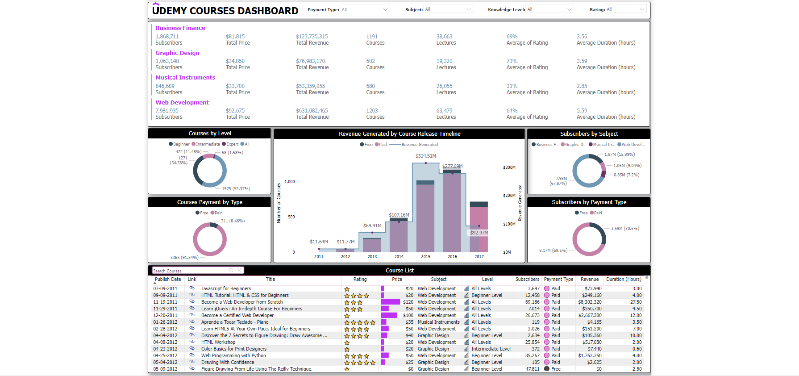

Unveiling E-Learning Dynamics: A Udemy Dashboard Analysis

Introduction:
In an era where digital education is a keystone for growth and innovation, data stands as the beacon guiding the way. I, Jude Raji, a data analyst with a zeal for educational trends, embarked on a project to unravel the story told by Udemy's wealth of course data. This was a journey into the heart of online learning, seeking to extract the narratives woven within the numbers of enrollments, revenues, and course popularity.
The mission was to crystallize raw data into strategic insights, illuminating which courses kindled the most curiosity and which formats held learners' attention. This exploration was more than a study—it was a map to empower one of the largest learning platforms in navigating the tides of digital education and curating an experience that resonates with learners worldwide.
Problem Statement:
As Udemy's repository of courses grows exponentially, so does the challenge of understanding what drives learner engagement and course profitability. With a vast array of subjects, formats, and pricing options, identifying the key factors that contribute to a course's success is not only crucial for content creators but also for the strategic direction of the platform. This project aimed to tackle the pressing question: what patterns and trends in the data can inform Udemy's approach to maximize both learner satisfaction and revenue generation in the competitive landscape of online education?
Task:
Complete an Exploratory Data Analysis of Udemy's courses with the following outputs:
- Identify trends in course enrollment and categorize the most popular subjects.
- Assess the correlation between course price, ratings, and enrollment numbers.
- Determine the distribution of course levels (beginner, intermediate, expert) across various subjects.
- Analyze the revenue generation over time to pinpoint peak performance periods.
- Evaluate the impact of course duration on subscriber count and satisfaction.
- Create an extensive dashboard to present to stakeholders.
- Generate a report summarizing the key findings and potential areas for strategic improvement.
Extra Note
One table was provided for this exercise. This table contains 13 fields and 3,676 records:
- Course ID
- Title
- Link
- Price
- Subscribers
- Reviews
- Lectures
- Level
- Rating
- Duration
- Publish Date
- Subject
The Analytical Approach:
The journey began with root cause analysis (RCA), a methodical approach to uncover the underlying reasons for the variations in donation figures across different regions. Employing the Five Whys technique, I was able to delve into the data and question each finding to reach the core issues that affect fundraising outcomes.
Data cleaning:
Before diving deep into analysis, the dataset underwent a rigorous cleaning process to ensure the integrity and clarity of the insights. This involved:
- Removing Duplicates: Ensuring no donor was counted more than once.
- Addressing Missing Values: Filling or removing gaps (or null values) in the data where necessary.
- Normalizing Data: Adjusting numerical values for comparability, crucial for analysis.
- Correcting Errors: Amending typos and inaccuracies in state names, job field, and other categorical data.
- Consolidating Data: Merging both (donation and donor) tables while avoiding redundancy.
- Anonymizing Data: Protecting donor privacy by anonymizing personal information where required.
- Pruning Irrelevant Data: Removing non-essential data fields for a focused analysis.
- Sorting and Filtering: Arranging the data for optimal analysis and filtering out the noise.
- Verifying Accuracy: Ensuring the dataset’s reflections of real-world entities post-cleaning.
With a clean and reliable dataset, the stage was set for deeper analysis and visualization.
Insights and Recommendations:
Diving into the heart of the dataset revealed a narrative rich with insights. The data spoke of not just numbers, but of people, places, and the potential for change. It illustrated a nuanced portrait of donor activity, with each metric telling a part of the story.
Gender and Donation Patterns
With the Females donating $121,457 (508 donors) and Males donating $127,628 (492 donors), we can rightly say that it is an even gender distribution.

Geographical Giving Trends
Digging into the maps, California's vast donor base lit up like a beacon of generosity. California has the highest number of donors (113), and the highest amount of donations ($30,264). However, South Dakota had the highest donation density ($401.00 per donor) while Alabama had the lowest donation density ($131.45 per donor).

Donor Engagement and Frequency
One-time donations are the most popular, significantly outpacing the lesser frequent monthly and weekly contributions.

Job Type Donation Influence
Human Resources had the highest number of Donors (93) and the highest amount of donations ($24,060), while Legal had the lowest number of donors (66) and the lowest amount of donations ($17,309). However, Research and Development had the highest donation density ($272.17 per donor), while Sales had the lowest donation frequency ($229.02)
Recommendations for Strategic Outreach:
- Enhanced Focus on California: The suggestion to increase efforts in California is strategic. Even though the state leads in total donations, optimizing the average donation value can lead to significant growth. Tailored campaigns could inspire larger contributions, leveraging the existing donor base.
- Expanding Geographic Outreach: Targeting other major states with potential donor bases can help diversify and increase overall donations. Broadening the donor pool is essential for sustainable growth and can also protect against regional economic downturns.
- Engagement in Underrepresented Regions: Identifying and addressing the lack of donations in the Northeast, Midwest, and South is critical. This could involve researching barriers to giving in these areas and crafting specific strategies to overcome them.
- Increasing Donation Frequency: Encouraging donors to contribute more regularly is a sound strategy for building a stable stream of revenue. Regular giving can also strengthen the donor's emotional investment in the cause.
- Data Streamlining and Relevance: Purging irrelevant data points makes for a more focused analysis and decision-making process. It's important to collect data that can lead to actionable insights.
- In-depth Donor Analysis: Gathering more demographic data, such as age and income levels, can greatly enhance personalized fundraising approaches and enable targeted engagement strategies.
- Collaboration with Educational Institutions: Given that a significant portion of donors are educated, partnerships with educational institutions could tap into a network of potential donors who already value learning, resonating with the charity's mission.
Conclusion and Reflections
The journey with Education for All underscored the transformative power of data when harnessed with intention and expertise. The analysis was more than a task; it was a commitment to turning data into actionable knowledge that could significantly advance the cause of educational accessibility.
For a more detailed exploration of the data story, please visit the link to the Dashboard